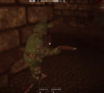
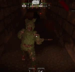

Springtrap is the eighth monster in Pillar Chase 2. He's a dark green, rotting animatronic rabbit with the decaying corpse of William Afton inside, who is a major antagonist from the Five Nights at Freddy's series, developed by Scott Cawthon, and the main antagonist of his debut in Five Night's at Freddy's 3. He can be unlocked for 1150 Coins in the shop (Previously 1987 before the MX update, then 1555 before the Vita Mimic update, and 1250 before the Black Friday Event's conclusion). He was released on May 31st, 2024..
|  When pressing 1 Sprintrap will start to glitch out and cause a ventilation error for 4.75 seconds. When a ventilation error is active, Springtrap's speed will be buffed by +3 and slowly regenerate stamina for the whole duration. Players that are near Springtrap will have their screen flash in and out and hyperventilate until they leave the radius of Ventilation Error. |
 When pressing 2 Springtrap instantly replenishes 15 stamina and becomes shrouded in smoke, getting +6 movement speed while darkening his own vision for 3 seconds and highlighting all players in the map. If a player makes contact with Springtrap while he is in this state, he will jumpscare them, applying the Fearful debuff to them. Springtrap can end this move early at any time by pressing the key / button again. Has a 20 seconds cooldown. |